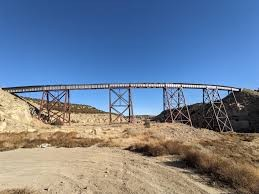
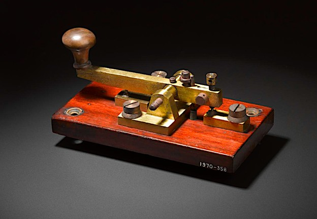
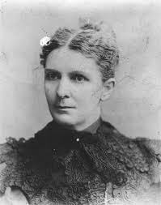

Salt Lake & Western Railroad Incorporated
On May 30, 1881, the Salt Lake and Western Railroad was incorporated to directly connect Lehi with the booming Tintic Mining District, marking a major shift from general rail access to targeted industrial transport. This line was specifically designed to move ore, supplies, and materials between the mines and the main rail network, reinforcing Lehi's central role as a key transfer point.[50]
The incorporation reflects how mining demands were driving railroad expansion across Utah at the time. Ultimately, Lehi Junction became a branching point westward from the main line in 1882, when the Western track was constructed, finally uniting the Tintic Mining District with Lehi.

Lehi as a Borderland
Lehi Junction was more than a place where tracks crossed; it was a "borderland" where two distinct worlds met.[51] To the east lay the quiet, orderly farm towns of the Utah Valley, built on a foundation of shared faith and hard-won irrigation. To the west lay the Tintic Mining District — a rugged, industrial frontier of silver, smoke, and global trade.[52]
The Salt Lake and Western Railway, which branched off at this very spot, served as the literal bridge between these two disparate societies.[53] As the trains hauled thousands of tons of silver ore eastward, they returned with new people: immigrant laborers from China, Ireland, and Italy who brought diverse languages and customs to the once-isolated valley.[54]
The Telegraph: Lehi's First Internet
The impact of the railroad on rural towns extended far beyond the movement of physical goods. It provided the first high-speed data network in the form of the telegraph.[56] The telegraph office, typically located within the railroad depot, shattered the isolation of the Utah Territory.[57] News that once took months to reach the valley via wagon or ship now arrived in seconds.
The Lehi Depot, built around 1873, was the nerve center of this connectivity.[58] As a two-story structure of board-and-batten construction, it served as a telegraph office, a freight warehouse, and even a community dance hall.[59] The stationmaster became a pivotal figure in the community, acting as the gatekeeper for both local commerce and national information.[60]

Opportunities for Women
The telegraph provided some of the first professional opportunities for women in Lehi and the surrounding settlements. Because telegraph offices were often located in small-town stations or even private homes, women could balance domestic responsibilities with the operation of telegraph keys. This technological shift allowed Utah women to participate in national political and social debates, accessing Eastern newspapers and suffrage pamphlets much more rapidly than before.
The railroad also enabled greater mobility for the residents of Lehi. Faster travel made it possible for local women — including noted figures like Ellis Reynolds Shipp and Martha Hughes Cannon — to travel East to earn medical degrees, bringing modern professional expertise back to the territory. In this sense, the railroad was an engine of social progress, providing the physical means for educational and civic expansion.
